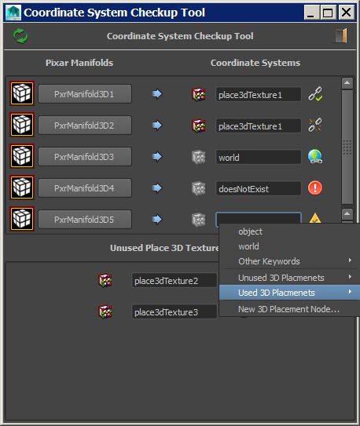

Coordinate System Attribute Validity Check |
|
VERSION 1.3 |
•Added filter options • •Using the trash icon to delete an item from the Unused Place 3D Texture nodes will also delete the row entry in the GUI •Fixed error if no icon found, a default icon will be used instead |
VERSION 1.2.1 |
•Fixed redeclaration error |
VERSION 1.2 |
•Added "sbManifold3DPlus" as a relevant node with "Coordinate System" field. |
VERSION 1.1 |
•Added "PxrFacingRatio" as a relevant node with "Coordinate System" field. •Fixed adding and removing the annotation node name connection to the Coordinate System name field. |
VERSION 1.0 |
•This tool consolidates all the “Coordinate System" fields from the relevant Pixar nodes (currently PxrManifold3D and PxrManifold3DN). And display if they are valid as well as offer other control options.  |